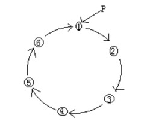
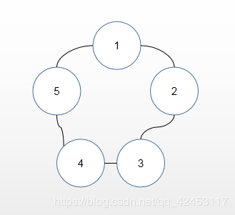
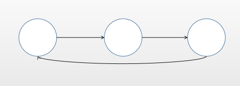

本篇文章介绍数据结构中的环形链表。
环形链表，类似于单链表，也是一种链式存储结构，环形链表由单链表演化过来。单链表的最后一个结点的链域指向NULL，而环形链表的建立，不要专门的头结点，让最后一个结点的链域指向链表结点。 简单点说链表首位相连，组成环状数据结构。如下图结构：

而在环形链表中，最为著名的即是约瑟夫环问题。
问题介绍：
设编号为1、2、3、... 、n的n个人围坐一圈，约定编号为k(1<=k<=n)的人从1开始报数，数到m的那个人出列，它的下一位又从1开始报数，数到m的那个人又出列。依次类推，直到所有人出列为止，由此产生一个出队编号的序列。
我们可以举个例子来分析一下：
假设一共有5个人，即n = 5；从第一个人开始报数，即k = 1；数到2的人出列，即m = 2。
示意图如下：

出队列的顺序即为：2 -> 4 -> 1 -> 5 -> 3
那么我们首先得构建出一个单向的环形链表。

实现分析：
分析完毕，我们用代码实现一下：
//创建一个环形的单向链表
class CircleSingleLinkedList {
// 创建一个first节点，当前没有编号
private Boy first = null;
// 添加节点，构建成一个环形链表
public void addBoy(int nums) {
// 对nums做一个校验
if (nums < 1) {
System.out.println("数据错误");
return;
}
// 定义辅助节点
Boy curBoy = null;
// 使用循环创建环形链表
for (int i = 1; i <= nums; i++) {
// 根据编号创建节点
Boy boy = new Boy(i);
// 如果是第一个节点
if (i == 1) {
first = boy;
first.setNext(first);
curBoy = first;// 让curBoy指向第一个节点，帮助构建链表
} else {
curBoy.setNext(boy);
boy.setNext(first);// 使其指向第一个节点，形成环状
curBoy = boy;// curBoy后移
}
}
}
// 遍历当前环形链表
public void list() {
// 判断链表是否空
if (first == null) {
System.out.println("链表为空");
return;
}
// 定义辅助节点
Boy curBoy = first;
while (true) {
System.out.println("节点编号:" + curBoy.getNo());
if (curBoy.getNext() == first) {
// 此时说明遍历完毕
break;
}
curBoy = curBoy.getNext();// curBoy后移
}
}
}
//创建一个Boy类，表示一个节点
class Boy {
private int no;// 编号
private Boy next;// 指向下一个节点
public Boy(int no) {
this.no = no;
}
public int getNo() {
return no;
}
public void setNo(int no) {
this.no = no;
}
public Boy getNext() {
return next;
}
public void setNext(Boy next) {
this.next = next;
}
}这样就实现了一个环形链表，接下来测试一下：
public static void main(String[] args) {
CircleSingleLinkedList circleSingleLinkedList = new CircleSingleLinkedList();
circleSingleLinkedList.addBoy(5);
circleSingleLinkedList.list();
}运行结果：
节点编号:1
节点编号:2
节点编号:3
节点编号:4
节点编号:5运行结果也是没有问题的，接下来便是生成出圈序列。
问题分析：
接下来是代码实现：
/**
* 根据用户的输入，计算出圈序列
*
* @param startNo 表示从第几个开始数
* @param countNum 表示数几下
* @param nums 表示一共有多少人
*/
public void countBoy(int startNo, int countNum, int nums) {
// 数据校验
if (first == null || startNo < 1 || startNo > nums) {
System.out.println("参数输入有误");
return;
}
// 定义辅助节点
Boy helper = first;
// helper事先应该指向环形链表的最后一个节点
while (true) {
if (helper.getNext() == first) {
break;
}
helper = helper.getNext();// helper后移
}
// 报数前，先让first和helper移动k - 1次
for (int j = 0; j < startNo - 1; j++) {
first = first.getNext();
helper = helper.getNext();
}
// 开始报数时，让first和helper节点同时移动，移动m - 1次
// 这里是一个循环的操作，直到圈中只有一个节点
while (true) {
if (helper == first) {
// 此时说明圈中只有一个人
break;
}
// 让first和helper同时移动countNum - 1次
for (int j = 0; j < countNum - 1; j++) {
first = first.getNext();
helper = helper.getNext();
}
// 此时first指向的节点就是要出圈的节点
System.out.println("节点" + first.getNo() + "出圈");
// 将该节点出圈
first = first.getNext();
helper.setNext(first);
}
System.out.println("最后留在圈中的节点编号:" + first.getNo());
}这个实现的逻辑相对来说还是比较复杂和难以理解的，接下来编写测试代码：
public static void main(String[] args) {
CircleSingleLinkedList circleSingleLinkedList = new CircleSingleLinkedList();
circleSingleLinkedList.addBoy(5);
circleSingleLinkedList.list();
System.out.println("--------------");
// 测试出圈序列
circleSingleLinkedList.countBoy(1, 2, 5);
}运行结果：
节点编号:1
节点编号:2
节点编号:3
节点编号:4
节点编号:5
--------------
节点2出圈
节点4出圈
节点1出圈
节点5出圈
最后留在圈中的节点编号:3和开始计算的结果相吻合。
到此，关于约瑟夫环的问题就成功解决了。